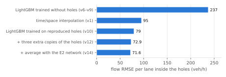
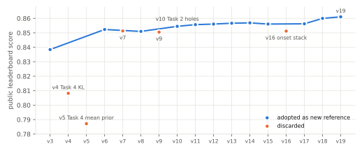
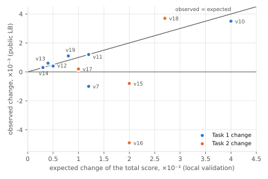

Summary. We treat the challenge as a problem of validation under distribution shift. Every decision was taken on local validation built from the training months – temporal block cross-validation, Task 2 windows rebuilt with the published selection rule over all nine training months, full “pseudo-months” that reproduce the evaluated masking, and re-masking of the released evaluated months – and the public leaderboard was used only to check that a locally measured gain transferred. Two findings drove most of the progress. First, each evaluated month is a different “world”: the free-flow speed level of each link moves by about 1.2 km/h (up to 3–5 km/h) between the training period and each evaluated month, while it is stable to 0.03 km/h inside training. Second, the evaluated months contain holes that the training month does not have: around every Task 2 window the organizers blank the whole corridor from T+5 to T+90 minutes, and a Task 1 model that never saw such holes reconstructs the flow there 2.5 times worse than plain interpolation. Fixing these two mismatches – a model trained on reproduced holes plus a small convolutional network, and an equivariant correction (E1) that removes the month’s level shift before the models and restores it afterwards – gave the gains that transferred to the leaderboard, and also lifted the physics term, since the conservation check is computed on our Task 1 reconstructions. Task 1 is a LightGBM residual model on top of time/space interpolation (55 features, including month-level and low-rank month completion features). Task 2 uses per-condition gradient boosting with a strict as-of-origin pipeline, verified by truncating all data after T; ongoing queues come from a stack of LightGBM, XGBoost and CatBoost with window context. Task 4 keeps the official NNLS with the split prior (λ = 0.05), after two principled alternatives lost clearly. We also report what did not transfer and why we think so.
| Task (weight) | Method in v19 | How it was chosen |
|---|---|---|
| 1 State (0.35) | Base value: interpolation in time on the same link, then in space, then the training profile. LightGBM (800 trees, 127 leaves) predicts the residual of speed and of flow per lane from 55 features. Around the Task 2 windows (targets from T to T+24) a second LightGBM trained on reproduced holes is averaged with a small residual CNN (E2). E1: the month’s free-flow level shift is removed from the inputs and restored to the predicted speeds. | 3-fold temporal block CV; reproduced holes; pseudo-months; re-masking of validation and private |
| 2 Queues (0.30) | Onset: LightGBM on features at T, prediction only at T+30, threshold 0.40, E1 level correction. Ongoing: stack of LightGBM, XGBoost and CatBoost with window context, threshold 0.45; trained on rebuilt windows plus randomly selected ongoing windows (6 seeds). Strictly data ≤ T. | Block CV on 4,196 rebuilt windows plus 9,752 random ongoing windows; 80 official train windows as an out-of-sample check |
| 3 Physics (0.15) | No separate output: computed by the organizers on the Task 1 answers. | Local estimator aligned with the official evaluator |
| 4 ODME (0.20) | Official NNLS towards the split prior, λ = 0.05, link counts of the split. | Two alternatives (KL, mean prior) lost clearly on the leaderboard |
Public leaderboard: v19 0.86106 (283rd of 703 teams on 31 October 2026). Local validation and leaderboard history are in Section 8. No external data, no pre-trained models, no paid APIs.
Ten directional freeway corridors (five families × two directions), one detector per link, 5-minute steps (288 per day). The training split covers June 2030 – February 2031 (273 days) with an unmasked layer; the public leaderboard scores March 2031 (validation) and the private one April 2031 (private), both regenerated with new seeds on 11 September 2026. The total score is 0.35·Sstate + 0.30·Squeue + 0.15·Sphysics + 0.20·SODME, averaged per corridor and then over families. Four properties of the data shaped the work.
All choices were made with rules written before looking at the results (typically: “adopt if the paired gain is positive in at least 25 of 30 corridor·folds and the mean exceeds a stated margin”), and at equal local score we preferred the simpler and more stable method.
score_task1.py (the official baseline gives 0.6255 on D12_I5_N with both). For physics we built an estimator aligned with the official one: same network parameters, same observable links, ramp validity and transitions within 0.12%; SFD is identical to the official value (0.9907 on D12_I405_S R1); on the naive historical baseline it gives Sphysics 0.3243 against 0.3242 official. SFD can even be computed exactly on the evaluated months without truth.cv_buchi.py): in each block we select Task 2 windows with the published rule, blank the corridor as in the evaluated months, and score the targets from T to T+24 with the truth in the blanked cells, as the evaluator does.cv_pseudomesi.py): each training month is turned into an evaluated month – ten Task 2 windows placed as in window_index.csv, protected history, holes – and fully reconstructed with the submission pipeline; we score 0.35·Sstate + 0.05·SFD + 0.10·SLWR with paired bootstrap intervals over 90 corridor·months, in the training world and in shifted worlds (each link gets δ ~ N(0, 1.2 km/h) in free flow only, the shift we measured).rimaschera_valutati.py): we hide 10% of the observed cells of validation and private (two seeds) and reconstruct them. This measures Sstate in the real shifted worlds using only released inputs; it compares models already trained and never selects hyperparameters.The first submission (v1) interpolated linearly in time on the same link, then in space across links, then fell back on the training median profile (local Sstate ≈ 0.905). v6 adds LightGBM on the residual of that base, separately for speed and flow per lane (800 trees, learning rate 0.05, 127 leaves, min_data_in_leaf 200, feature/bagging fraction 0.8, λ2 = 1, seed 0). Features (48 in v6): previous/next observation on the same link and their time distances; upstream/downstream observations at the same instant and their distances in km; time and space interpolations of speed, flow and occupancy; the deviation of neighbouring links (±1, ±2) from their straight line across the same temporal gap – if a neighbour bends inside the gap, the target probably does too –; neighbours at t±1; observation density around the cell; link statics (free-flow speed, capacity and jam density per lane, lanes, length, relative position); time of day, weekday and the masking regime. Local Sstate went from 0.905 to 0.939 and v6 gained +0.0139 on the leaderboard over v3.
v7 (3,200 trees: +0.0018 Sstate locally, better in 30 of 30 corridor·folds) lost 0.0010 on the leaderboard, and v9 (training on cells copied into shifted worlds) lost 0.0005. Re-masking the real evaluated months showed that Sstate did rise there (v9: +0.0010/+0.0012 in validation/private); SFD, computed exactly, did not explain it. The cause was in the holes. Inside them the versions diverged most (flow v7−v6: 200 veh/h on average inside, 14 outside), and that 1.6% of the targets carried 12–13% of the whole difference in vehicle count N = qL/v between versions. Reproducing the holes in training showed that LightGBM trained without holes reconstructs flow inside them far worse than plain interpolation, and that this costs about 0.09 of SLWR per month (Figure 1).

v10 therefore uses two models: the v6 model everywhere except the targets from T to T+24 of each Task 2 window of the split (read from the released window_index.csv), where a model trained also on reproduced holes is used; this region covers 100% of the real holes and 2–4% of the targets. Expected +0.004 (0.10 × 0.04 of SLWR), observed +0.0035 – the first Task 1 change whose local estimate transferred. v12 trains the holes model on three more copies of the holes with different windows (6,160 more windows; RMSE in the holes 8.21 → 7.43 km/h for speed and 78.7 → 72.9 veh/h per lane for flow, better in 30/30 and 28/30 corridor·folds), observed +0.0004 against +0.0005 expected. v14 averages it with E2, a small residual CNN (8 dilated residual blocks, 64 channels) that sees the whole corridor from T−12 to T+36 and reconstructs the window zone jointly (pseudo-months +0.00047, 63/9; observed +0.0003). The network alone is not better (it improves speed and worsens flow), but its errors differ from the trees’ and the average improves speed, flow and the conservation residual. An extra loss on the change of density error (E3) reduced the conservation residual by 12% but lost RMSE and did not pay on the total.
We first checked on the real evaluated months where the level shift lives. Regressing, per occupancy band, each link’s speed shift on the shift of its night level (1:00–4:00, always free flow):
| Occupancy (train quantiles) | v / vf | Slope | Correlation |
|---|---|---|---|
| 0–0.50 | 0.999 | 0.996 | 0.999 |
| 0.80–0.90 | 1.000 | 0.998 | 0.994 |
| 0.90–0.95 | 0.999 | 0.985 | 0.923 |
| 0.95–0.98 | 0.705 | 0.780 | 0.214 |
| 0.98–1 | 0.344 | 0.162 | 0.042 |
The shift is entirely a free-flow phenomenon and vanishes in congestion. E1 (task1.equivariante) estimates δ per link and day as the night level of the month observed so far minus the training level, subtracts it from the observed speeds with a free-flow weight (full above 0.95·vf, zero below 0.8·vf), runs the unchanged models in the “training world”, and adds δ back to the predicted speeds with the same weight. Nothing is trained. On the re-masked real months: Sstate +0.0027/+0.0029 (validation/private, 20/20 corridor·seeds), SLWR +0.0018/+0.0020; expected +0.0012 on the total, observed +0.0012 (v11). Interpolation is invariant to E1, as it should be. v13 adds month-level features (the month’s free-flow level of the link, its shift from training, the deviation of the interpolated speed from that level) and trains on training cells plus the same cells in one shifted world per block: pseudo-months +0.0006 in both worlds, re-masked months +0.0010 of Sstate (19/20); observed +0.0006. The gain is not only robustness: the month level acts as a denoised reference in free flow, where the interpolation between two noisy neighbours is worse.
For each corridor and month the (day × instant) × link matrix of eligible observations of the masked layer is completed at rank r by alternating least squares (ridge 1), for speed and flow per lane; ranks (4 for speed, 2 for flow) were chosen on held-out observed cells. Alone the low-rank estimate is poor (8.7 km/h, 58 veh/h/lane, against about 1.7 km/h and 33 veh/h/lane for our model): queues break the low-rank structure. As features next to the interpolation, however, they give the model the month’s profile of the link: block CV 0.94008 → 0.94194 Sstate, SLWR 0.5987 → 0.6027, total part +0.00105 (25/30 corridor·folds, meeting the pre-declared rule); re-masked real months Sstate +0.0021 (20/20 validation, 19/20 private). This is v19, observed +0.0011.
Since the physics term is computed on our Task 1 answers, we optimized it only through Task 1 and measured it with the aligned estimator. Two thirds of it is the LWR conservation term SLWR = 1 − Σ|ΔN̂ − ΔN| / Σ|ΔN| over transitions of the regime’s days, with N = (q/v)·L. Because masks are drawn per cell, an isolated target counts twice (2·|N̂ − N|): what matters is the L1 error on density, which concentrates in queued cells where N is large and small speed errors are amplified. Ramps are synthetic and uncorrelated with mainline flow differences (correlation 0.08), so they carry no information for reconstruction. The v3 → v6 gain (+0.0139) exceeded the Sstate part (≈ +0.012), i.e. Sphysics rose by ≈ 0.013 (≈ +0.002 on the total) with a better Task 1; the holes model alone moved SLWR of a month by about +0.04. Our physics gains came from correcting a mismatch between training and evaluated months, not from imposing a physical projection on the predictions.
A queue is speed ≤ 0.6·vf; the forecast covers T+5 … T+30 for every link of the window, scored by spatio-temporal IoU. For queue_onset windows (no queue in the history) the selection rule implies – and the organizers confirmed – that the queue appears only at T+30, so we predict only that step. One LightGBM per condition (400 trees, 63 leaves, seed 0) is trained on rows (window × link × step) with 42 features: speed ratio v/vf at T and at lags up to T−12, minimum, means and slope, age of the last observation, flow, flow/capacity and occupancy, ratios of up to four upstream and downstream links, whether the link is queued and the distance to the nearest queue upstream and downstream at several lags, queue duration, number of queued links in the corridor, link statics, time of day, step, and the historical queue frequency of the link at that instant and at T, computed on the whole training split. Without the frequency the onset IoU drops by 0.034.
For a window with origin T we use only window_history.parquet (T−60 … T−5), the row at T of the masked layer of the split, and quantities computed on the training split (frequencies, models, thresholds). scripts/verifica_task2_online.py truncates both the masked layer and the window history at T for 48 windows (8 corridors × validation/private × onset/ongoing) and recomputes the forecasts: they are identical in all 48. Thresholds (0.40 onset, 0.45 ongoing) maximize the worst fold of the block CV and sit on flat plateaus (onset within 0.005 between 0.30 and 0.45). No Task 2 choice was made on the leaderboard, whose labels are after T.
| Change (submission) | Validation | Local IoU | Δ [95% bootstrap] | Decision |
|---|---|---|---|---|
| LightGBM per condition vs persistence of the state at T (v3) | onset / ongoing, rebuilt windows | 0.865 / 0.914 | vs 0.002 / 0.815 | adopted |
| Ongoing trained on rebuilt + random windows (v8) | 40 official ongoing windows, out of sample | 0.857 | vs 0.835 | adopted |
| Random ongoing windows from 6 seeds (v15) | 9,752 random ongoing windows | 0.8423 | +0.0128 [+0.0105, +0.0153] | adopted (3/3 folds) |
| Stack LightGBM + XGBoost + CatBoost + window context, ongoing (v18) | 9,752 random ongoing windows | 0.8650 | +0.0228 [+0.0201, +0.0255] | adopted (3/3 folds) |
| Same stack for onset (v16) | 2,102 onset windows | 0.8787 | +0.0137 [+0.0078, +0.0189] | not in final (see 6.4) |
| E1 level correction for onset (v17) | onset, training / two shifted worlds | 0.8643 | −0.0007 / +0.0120 / +0.0067 | adopted (robustness) |
| Same-month queue features before T | 2,102 onset windows | 0.8572 | −0.0078 [−0.0128, −0.0030] | rejected |
| IoU-oriented top-k decoding, calibration, Viterbi smoothing | random ongoing windows | 0.8274 | −0.0020 [−0.0040, −0.0000] | rejected |
| Onset trained also on origins with earlier queues | 2,102 onset windows | 0.8388 | −0.026 [−0.035, −0.017] | rejected |
The stack is nested: second-level training rows receive out-of-fold first-level probabilities, plus context of the LightGBM probability inside the window (neighbours’ probabilities, rank, maximum and sum over the window), which a cell-wise model cannot see. A plain stack (features + LightGBM probability) is worse; it pays only with the window context. For ongoing, XGBoost with deeper trees beats LightGBM (+0.0104) and CatBoost loses, while for onset the reverse holds – with 13 million rows per fold capacity matters for ongoing. Smoothing the labels (to approximate the latent-state truth used by the evaluator) changes 2.4% of queued labels and leaves the ranking of methods unchanged.
On ongoing windows the main errors are queues predicted to persist that dissolve (43,400 cells) and growth onto new links that is not predicted (26,200), against 11,600 and 12,700 of the opposite kinds. For onset, the weak spot is a queue born on a link where queues historically do not form (frequency < 0.02: 89 windows, IoU 0.15–0.20 for every method, 233 false negatives against 36 hits); at T these links are still at ≥ 0.9·vf, so they are most likely incidents with no precursor in the data. Weakest corridors: D7_I10_W (0.73–0.76), D12_I5_S (0.76–0.79), D7_I405_S (0.80–0.84). No engine wins consistently in any band, so a per-band switch has nothing to stand on.
The onset stack (v16) is the one decision where local evidence and the leaderboard disagree beyond noise: every local measure favours it (folds, shifted worlds where LightGBM loses 0.007–0.013 and the stack almost nothing, official windows 0.9169 → 0.9548), yet the public score dropped by 0.0049 from 26 changed cells in 10 public windows. Resampling the per-window differences of the changed windows from the CV, a sum this low occurs with probability 0.5%. The submission function reproduces the CV to 3·10−8 with fold models and passes the online test, so it is not a pipeline error. We did not find the cause; by our own rule (Task 2 is not selected on the leaderboard) the stack would stay, but with an unexplained 0.5%-probability contradiction on the only out-of-world data we have, we kept the simpler E1 LightGBM for onset in the final submissions.
Counts exist only on mainline links and are consistent with the path structure; the rank of the counted links equals the number of zones minus one, so counts identify how many vehicles cross each section but not between which zones. The prior has too many long trips: A·b exceeds the counts 1.5–2.5 times (except D12_I405), and the NNLS drives 50–66% of the paths to zero, almost all long. We tested two principled alternatives that also reproduce the counts (99.99–100%): minimum relative entropy with respect to the prior (f = b·exp(Aᵀμ), which corrects the trip-length bias multiplicatively without zeroing paths; f/b falls smoothly with path length, from 0.85 to 0.06 by quintile on D7_I10_E), and NNLS towards the mean of the three priors (train, validation, private share a common part, corr(log btrain, log bval) = 0.73–0.75, plus a split-specific part with σ ≈ 0.62). Since Sod, Sdev and Sattr need reference flows that are not released, even for training, the choice between estimators that are exact on the counts cannot be made locally; we spent exactly two submissions on it. Both lost clearly (SODME ≈ −0.15 for KL, ≈ −0.26 for the mean prior), so the reference solution is closer to NNLS on the split prior, and we kept the official estimator (λ = 0.05) without tuning λ on the leaderboard.

| Version | Change with respect to the previous reference | Expected Δ | Public | Observed Δ |
|---|---|---|---|---|
| v1 | T1 interpolation; T2 persistence; T4 NNLS with split prior | — | 0.72215 | — |
| v3 | T2 LightGBM per condition, onset only at T+30 | +0.144 | 0.83843 | +0.116 |
| v4 / v5 | T4 KL to prior / mean of three priors | ? | 0.80818 / 0.78720 | −0.030 / −0.051 |
| v6 | T1 LightGBM on interpolation residuals | +0.012 (state only) | 0.85232 | +0.0139 |
| v7 | T1 3,200 trees | +0.0012 | 0.85128 | −0.0010 |
| v8 | T2 ongoing on rebuilt + random windows | small | 0.85098 | −0.0013 |
| v9 | T1 trained also in shifted worlds | small | 0.85050 | −0.0005 |
| v10 | T1 second model on reproduced Task 2 holes | +0.004 | 0.85449 | +0.0035 |
| v11 | T1 E1 level correction | +0.0012 | 0.85566 | +0.0012 |
| v12 | T1 holes model with three extra copies | +0.0005 | 0.85606 | +0.0004 |
| v13 | T1 month-level features, shifted-world training | +0.0004 | 0.85664 | +0.0006 |
| v14 | T1 average with E2 network in the window zones | +0.0003 | 0.85689 | +0.0003 |
| v15 | T2 ongoing random windows from 6 seeds | +0.002 | 0.85607 | −0.0008 |
| v16 | T2 onset stack (discarded) | +0.002 | 0.85118 | −0.0049 |
| v17 | T2 onset with E1 (on v15) | +0.001 | 0.85624 | +0.0002 |
| v18 | T2 ongoing stack | +0.0027 | 0.85998 | +0.0037 |
| v19 | T1 E5 low-rank month features | +0.0006–0.001 | 0.86106 | +0.0011 |

Choice of the two final submissions. v19 is the best version on every local measure and on the leaderboard. v18 differs from v19 only in the main Task 1 model (no E5 features): it hedges against E5 not transferring to April, while sharing the Task 2 and Task 4 parts that we consider settled. Both are reproduced by the same code.
The package regenerates the selected submission from the released data, training included, with one command:
scripts/scarica_dati.sh # download and extract the release into data/kaggle_public (Kaggle API) scripts/riproduci.sh v19 # environment, features, training, inference -> submissions/v19.csv scripts/riproduci.sh v18 # second selected submission (shares every step except the main Task 1 model)
Environment: Python 3.12.8 and dependencies pinned in uv.lock (LightGBM 4.7.0, XGBoost 3.4.1, CatBoost 1.2.10, PyTorch 2.14.1, numpy 2.5.4, pandas 3.0.6, scipy 1.18.1, pyarrow 26.0.0). Seeds are fixed in every step (LightGBM/XGBoost/CatBoost seed 0, PyTorch seed 0, NumPy generators seeded per corridor and block); thread counts are those of the original runs. Everything runs on CPU; no GPU is required. Details, step times and memory peaks are in the package README.
Verification (31 Oct – 1 Nov 2026; i9-11900, 16 threads, 61 GB RAM). In a fresh clone (new environment, data cache rebuilt from the raw release), inference with the frozen models gives a v19 file byte-identical to the one uploaded to Kaggle (21 min, 5 GB peak). For v18, Tasks 2 and 4 are identical and Task 1 differs only in the last float32 bit (170 of 6.7 M cells change by 0.001 in the last written decimal): its Task 1 part was computed on 20 October for v14 with the same models and reused up to v18. The full run takes 6 h 31 min for v19 (E2 network on CPU 3 h 04 min, Task 2 stack 1 h 44 min; peak 25 GB) and 23 min more for v18. Retraining is not bit-identical: multi-threaded LightGBM is not bit-deterministic (the first trees coincide, later ones differ in the last digits) and E2 was originally trained on a GPU. The retrained v19 differs in 2.6% of the Task 1 cells (RMSE of the difference 0.10 km/h, 0.96 veh/h per lane) and in 60 of 174,000 Task 2 cells; Task 4 is identical. As RMSE obeys the triangle inequality and 1 − IoU is a metric (Jaccard distance), this bounds the change of the private score without the truth: 0.00036 from Sstate, 0.0028 from Squeue, plus about 0.00006 from physics. The total, at most 0.0032 (0.4% of the score), is within the 1% tolerance; v18 gives the same figures.
External data and models: none; no pre-trained models; no paid APIs in the method. All libraries are under OSI-approved licences that allow commercial use (MIT, BSD-3, Apache-2.0, PSF). The organizers’ repository (MIT) was used for evaluators and baselines during development only. Compute: own machines (16-thread Intel i9-11900, 61 GB RAM, Ubuntu; an RTX 4090 server was used during development for some experiments, not needed to reproduce). Team: one member, one Kaggle account; no private sharing of code. AI assistance: development was assisted by an AI programming assistant (Claude Code, Anthropic), used to write code, run experiments and draft documentation under the author’s direction; it is not part of the method and produces no predictions. Disclosed for transparency in line with IEEE policy on AI-generated content.